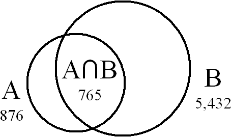

| Version | 3 |
| Authors | Mark Davis (mark.davis@us.ibm.com, home) |
| Date | 2002-08-16 |
| This Version | http://www.unicode.org/reports/tr22/tr22-3.html |
| Previous Version | http://www.unicode.org/reports/tr22/tr22-2.2.html |
| Latest Version | http://www.unicode.org/reports/tr22/ |
This document specifies an XML format for the interchange of mapping data for character encodings, and describes some of the issues connected with the use of character conversion. It provides a complete description for such mappings in terms of a defined mapping to and from Unicode, and a description of alias tables for the interchange of mapping table names.
This document has been reviewed by Unicode members and other interested parties, and has been approved by the Unicode Technical Committee as a Unicode Technical Report. It is a stable document and may be used as reference material or cited as a normative reference from another document.
A Unicode Technical Report (UTR) may contain either informative material or normative specifications, or both. Each UTR may specify a base version of the Unicode Standard. In that case, conformance to the UTR requires conformance to that version or higher.
A list of current Unicode Technical Reports is found on [Reports]. For more information about versions of the Unicode Standard, see [Versions]. Please mail corrigenda and other comments to the author(s). The References provide related information that is useful in understanding this document.
The ability to seamlessly handle multiple character encodings is crucial in today's world, where a server may need to handle many different client character encodings covering many different markets. No matter how characters are represented, servers need to be able to process them appropriately. Unicode provides a common model and representation of characters for all the languages of the world. Because of this, Unicode is being adopted by more and more systems as the internal storage processing code. Rather than trying to maintain data in literally hundreds of different encodings, a program can translate the source data into Unicode on entry, process it as required, and translate it into a target character set on request.
Even where Unicode is not used as a process code, it is often used as a pivot encoding. Data can be converted first to Unicode and then into the eventual target encoding. This requires only a hundred tables, rather than ten thousand.
Whether or not Unicode is used, it is ever more vital to maintain the consistency of data across conversions between different character encodings. Because of the fluidity of data in a networked world, it is easy for it to be converted from, say, CP930 on a Windows platform, sent to a UNIX server as UTF-8, processed, and converted back to CP930 for representation on another client machine. This requires implementations to have identical mappings for a character encoding, no matter what platform they are working on. It also requires them to use the same name for the same encoding, and different names for different encodings. This is difficult to do unless there is a standard specification for the mappings so that it can be precisely determined what the encoding actually maps to.
This technical report provides such a standard specification for the interchange of mapping data for character encodings. By using this specification, implementations can be assured of providing precisely the same mappings as other implementations on different platforms.
Note: It is expected that future versions of this specification will also include provisions for complex mappings such as 2022 and glyph-based mappings.
Client software needs to distinguish the different types of mismatches that can occur when converting data between different character encodings. These fall into the following categories:
In the case of illegal source sequences, a conversion routine will typically provide the following options:
Note: There is an important difference between the case where a sequence represents a real REPLACEMENT CHARACTER in a legacy encoding, as opposed to just being unassigned, and thereby mapped to REPLACEMENT CHARACTER (using an API substitution option).Note: An API may choose to signal an illegal sequence in a legacy character set by mapping it to one of the explicit NOT A CHARACTER code points in Unicode (any of the form xxFFFE or xxFFFF). However, this mechanism runs the risk of these values being transmitted in Unicode text (which is thus non-conformant), and should be used with caution.
Unassigned sequences can be handled with any of the above options, plus some additional ones. They should always be treated as a single code point: for example, 0xA3BF is treated as a single code point when mapping into Unicode from CP950. Especially because unassigned characters may actually come from a more recent version of the character encoding, it is often important to preserve round-trip mappings if possible. This can be done with additional options:
For unmappable sequences, all of the above options and one additional option may be available:
It is very important that systems be able to distinguish between the fallback mappings and regular mappings. Systems like XML require the use of hex escape sequences (NCRs) to preserve round-trip integrity; use of fallback characters in that case corrupts the data.
Because illegal values represent some corruption of the data stream, conversion routines may be directed to handle them in a different way than by replacement characters. For example, a routine might map unassigned characters to a substitution character, but throw an exception on illegal values.
There may be cases where a specified character mapping table is not available. In such cases, a best-fit mapping table can be used. However, this technique should be used with caution, since otherwise data can be corrupted. For example, in XML there are different strategies depending on whether the process is parsing or generating.
Suppose that you have two sets X and SUB_X, where X is a superset of SUB_X. (That is, every roundtrip mapping that is in SUB_X is also in X, and X may contain additional round-trip mappings.) Then:
- It is ok to parse with X when the file is tagged as SUB_X. Since X is a superset, all the characters will be read correctly. Any characters that are not in SUB_X will be encoded as NCRs (e.g. ꯍ), and will work.
- It is ok to generate the file with SUB_X, and tag the file as X. As long as you convert the characters that are not in SUB_X into NCRs, everything works.
- What is NOT ok is to parse with SUB_X when the file is tagged with X — characters will be corrupted.
- What is NOT ok is to generate the file with X, and tag the file with SUB_X — characters will be corrupted.
So looking up a best-fit character mapping needs to do two different things, depending on whether a subset or a superset is required. The alias table describes data that can be used for this.
Some mapping tables for multibyte codepages define an additional, alternate codepage substitution character "subchar1" which is always a single-byte code. In this case, the regular substitution character is always a double-byte code. These mapping tables then also list in the mapping section which unassigned code points should map to this alternate subchar1 instead of to the regular substitution character.
The XML character mapping table format allows to specify the
"subchar1" byte sequence as a sub1 attribute of the assignments
element, and to use sub1 elements to specify which Unicode code
points should map to "subchar1" instead of to the regular
substitution character.
Usage:
In this context characters are thought of as being "wide" or "narrow". In legacy codepages, this is identified with the codes being single-byte or double-byte codes.
In mappings between two legacy codepages: When a wide (double-byte) character is unassigned, it results in a double-byte substitution character. When a narrow (single-byte) character is unassigned, it results in a single-byte "subchar1".
This is emulated in Unicode↔codepage mapping tables by
Typically, all unassigned Latin-1 characters (Unicode<=U+00ff) have subchar1 mappings, but also some other code points do.
This means that
Some converter implementations seem to not distinguish between roundtrip/fallback/subchar[1] and just have the desired default results in the Unicode↔codepage runtime mapping tables.
It is important that a mapping file be a complete description. From the data in the file, it must be possible to tell for any sequence of bytes whether that sequence is assigned, unassigned, or illegal. It must also be possible to tell if characters need to be rearranged to be in Unicode standard order (visual order, combining marks after base forms, etc). In addition,
If two byte sequences are considered to be duplicate encodings, then they can map to the same Unicode value (with one of them being a fallback).
| Legacy | Unicode | |
|---|---|---|
| X | X | |
| X' |
If they are not, they must map to distinct Unicode values (e.g. using a PU character). Otherwise they will get loss of data when converting to and from Unicode.
| Legacy | Unicode | |
|---|---|---|
| X | X | |
| X' | PUx' |
If a future version of Unicode incorporates a character that was represented by a PU character, the mapping should be changed as follows:
| Legacy | Unicode | |
|---|---|---|
| X' | PUx' |
| Legacy | Unicode | |
|---|---|---|
| X' | X' | |
| PUx' |
The Unicode Standard has two equivalent ways of representing composite characters such as â. The standard provides for two normalized formats that provide for unique representations of data in UAX #15: Unicode Normalization Forms [Normal]. Where possible, the code points mapped to should be in Normalization Form C. However, this does not guarantee that the result of conversion into Unicode will be normalized, since individual characters in the source encoding may separately map to an unnormalized sequence.
For example, suppose the source encoding maps 0x83 to U+030A in Unicode (combining ring above), and 0x61 to U+0061 (a). Then the sequence <0x61,0x83> will map to <U+0061, U+030A> in Unicode, which is not in Normalization Form C.
This problem will only arise when the source encoding has separate characters that, in the proper context, would not be present in normalized text. If a process wishes to guarantee that the result is in a particular Unicode normalization form, then it should normalize after conversion. Information is provided below that can determine whether this step is required.
Names and aliases of charsets are often spelled with small variations. In order to recognize accidental but unambiguous misspellings and to avoid adding each possible variation to a list of recognized names, it is customary to match names case-insensitively and to ignore some punctuation. For best results, it is recommended to compare names after applying the following transformations:
For example, the following names should match: "UTF-8", "utf8", "u.t.f-008", but not "utf-80" or "ut8".
A character mapping specification file starts with the following lines. Note that there is a difference between the encoding of the XML file, and the encoding of the mapping data. The encoding of the file can be any valid XML encoding. Only the ASCII repertoire of characters is required in the specification of the mapping data, but comments may be in other character encodings. The example below happens to use UTF-8.
<?xml version="1.0" encoding="UTF-8"?> <!DOCTYPE characterMapping SYSTEM "http://www.unicode.org/unicode/reports/tr22/CharacterMapping.dtd">
Note: In the rest of this specification, very short attribute and element names are used just to conserve space where there may be a large number of items, or for consistency with other elements that may have a large number of items.
A mapping file begins with a header. Here is an (artificial) example:
<characterMapping id="windows-1252-2000" version="2" description="Sun variant of CP942 for Japanese" contact="mailto:somebody@unicode.org" registrationAuthority="Microsoft" registrationName="cp666" copyright="Microsoft" bidiOrder="logical" normalization="NFC" >
characterMapping (required) is the root. It contains a number of attributes:
id (required) is a canonical id which uniquely identifies this mapping table from all others. This id has the form: <source>-<name_on_source>-<version>, such as "iso-8859-1999".
| <source> | Name of standards authority, government, vendor, or product |
| <name_on_source> | Most common name used on source. If the name is used ambiguously on the source, it should be qualified for uniqueness: e.g. "cp936_Alt1" |
| <version> | Version number, typically the first year the encoding was introduced. If this is not sufficient for uniqueness, an additional letter can be appended: "1999a", "1999b", etc. |
All three fields must be present, except in the case of Unicode encodings themselves, which do not need a version field. Fields are limited to ASCII letters, digits and "_". Any other characters should be converted to "_" or letters. The id value is matched leniently as recommended for all charset names, see Section 1.4. It must be unique; if two mapping tables differ in the mapping of any characters, in the specification of illegal characters, in their bidi ordering, in their combining character ordering, etc. then their ids must not match according to the algorithm in Section 1.4.
Note: The id syntax was chosen so that the resulting string can be used as a filename on most systems.
Note: If a source only has one id for two mappings that differ by bidi-order, one must be given a qualification. E.g. "cp543_RTL" (see below).
Note: These ids are not meant to compete with the IANA character set registry [IANA], which is the most useful collection of cross-platform names available. We foresee registration of many of these mappings in the future with IANA since, unfortunately, the current usage of IANA names is not sufficiently precise. For example, very many character set mappings advertise themselves as being "Shift-JIS", but actually have different mappings to and from Unicode on different platforms.
Some sources do not rename a character set when they add mappings: that is provide mappings for characters that were previously unmapped, or were previously mapped to private use characters. These added mappings can be incorporated into the same mapping file, using a version attribute (see below). If only additions are made, then the same id can be retained. However, if mappings are changed in other ways (e.g. not pure additions), then a new id must be used. Any change in the validity of character sequences also requires a new id.
version (required) is the version of the data, a small integer normally starting at one. Any time the data is modified, the value must be increased.
description (optional) is a string which describes the mapping enough to distinguish it from other similar mappings. This string must be limited to the Unicode range U+0020 - U+007E and should be in English. The string normally contains the set of mappings, the script, language, or locale for which it is intended, and optionally the variation. For instance, "Windows Japanese JIS-1990", "EBCDIC Latin 1 with Euro", "PC Greek".
contact (optional) is the person to contact in case errors are found in the data. This must be a URL.
registrationAuthority (optional) is the organization responsible for the encoding.
registrationName (optional) is a string that provides the name and version of the mapping, as known to that authority.
copyright (optional) provides the copyright information. While this can be provided in comments, use of a element allows copyright propagation when converting to a binary form of the table. (Typically the right to use the information is granted, but not the right to erase the copyright or pretend that you created the information.)
bidiOrder (optional) specifies whether the character encoding is to be interpreted in one of three orders: "RTL", "LTR", or "logical". Unicode text is always stored and processed in logical order (basically keystroke order). Application of the Unicode Bidirectional Algorithm is required to map to a visual-order character encoding; application of a reverse bidirectional algorithm is required to map back to Unicode. The default value for this attribute is "logical". It is only relevant for character encodings for the Middle East (Arabic and Hebrew). For more information, see UAX #9: The Bidirectional Algorithm [BIDI]. If mapping tables differ only in bidiOrder, this should be reflected in the <name_from_source>, e.g. "cp999", "cp999_RTL", "cp999_LTR".
normalization (optional) specifies whether the result of conversion into Unicode using this mapping will be automatically in Normalization Form C or D. The possible values are "undetermined" (the default), "neither", "NFC", "NFD", or "NFC_NFD". While this information can be derived from an analysis of the assignment statements (see UAX #15: Unicode Normalization Forms [Normal]), providing the information in the header is a useful validity check, and saves processing. Most mappings specifications will have the value "NFC". Character encodings that contain neither composite characters nor combining marks (such as 7-bit ASCII) will have the value "NFC_NFD".
<history> <modified version="2" date="1999-09-25"> Added Euro. </modified> <modified version="1" date="1997-01-01"> Made out of whole cloth for illustration. </modified> </history>
history (optional) provides information about the changes to the file and relations to other encodings. This is an optional element.
modified provides information about the changes to the file, coordinated with the version. The latest version should be first.
As discussed above, it is important to be able to distinguish when characters are unassigned vs. when they are invalid. Valid and invalid sequences are specified by the validity element. Here is an example of what this might look like, for the validity specification for Microsoft's SJIS ("windows-932-2000"):
<validity> <state type="FIRST" next="VALID" s="00" e="80" /> <state type="FIRST" next="VALID" s="A0" e="DF" /> <state type="FIRST" next="VALID" s="FD" e="FF" /> <state type="FIRST" next="LAST" s="81" e="9F" /> <state type="FIRST" next="LAST" s="E0" e="FC" /> <state type="LAST" next="VALID" s="40" e="7E" /> <state type="LAST" next="VALID" s="80" e="FC" max="FFFF"/> </validity>
The subelements are states. Their attributes are:
For a pure definition of the mapping tables, neither max nor UNASSIGNED are necessary. They could both be determined by analyzing the assignment statements in the table. However, their inclusion allows implementations to optimize their internal tables.
All values referring to code units are hexadecimal. If we look at the above table, the first three lines tell us that the single bytes 00-80, A0-DF, FD-FF are illegal. The next two lines say that the bytes in the ranges 81-9F and E0-FC are legal, if they are followed by a byte of type="LAST". The next two lines show that the LAST byte must be in 40-7E, 80-FC More detailed samples for a complex validity specification are given in Samples.
The validity specification is interpreted by setting the current state to FIRST, and using the following process.
The following is a sample of how this could be implemented in Java. It
would be very similar in C or C++ except that type would be an
output parameter and not an array, and the mask with 0xFF is
unnecessary if byte is a typedef for unsigned char.
/**
* Checks byte stream for validity
* @return number of valid bytes, and sets a flag.
* @param type VALID, INVALID, PARTIAL indicates invalid sequence.
* PARTIAL occurs at the end of a buffer, and indicates that a new buffer needs to be loaded.
* If there are no more bytes, it is equivalent to INVALID.
* @param length the number of bytes up to <b>and including</b> the final byte
* that caused the problem.
*/
public int check(byte[] source, int position, int limit, byte[] type) {
int p = position;
byte state = FIRST;
try {
while (p < limit) {
state = stateMap[state][source[p++] & 0xFF]; // mask in Java
if (state < FIRST) { // VALID and INVALID are negative values
type[0] = state;
return p-position;
}
}
} catch (ArrayIndexOutOfBoundsException e) {} // fall through
type[0] = (state < FIRST) ? state : PARTIAL;
return p - position;
}
static final byte FIRST = 0;
|
The following describes conditions under which a validity specification is invalid.
EBCDIC-based multi-byte encodings use exactly two states and change between them with SI and SO (Shift-In/Shift-Out) ISO control codes. There are a few ASCII-based SI/SO encodings as well. (As it happens, the byte values for SI and SO are the same in EBCDIC and ASCII.)
Such stateful encodings are announced and tracked with a single CCSID (IBM encoding ID) and are listed in the ICU Unicode conversion table repository [Conv] with one single mapping table that lists mappings for both states together. The mappings are implicitly (and at runtime) distinguished by their numbers of bytes per character: 1 in the initial state, and 2 in the other state. Note that the double-byte lead byte ranges overlap a lot with the single-byte codes.
This are expressed in the XML character mapping tables by defining two
validity specifications, one for the single-byte state, and one for the
double-byte state. A stateful_siso element is used instead of the
normal validity element, and stateful_siso itself
contains two validity elements.
In the assignment elements below, the mappings for the two states need not be in any particular order.
Example:
<!-- EBCDIC Mixed SBCS/DBCS validity specification -->
<stateful_siso>
<!-- SBCS part -->
<validity>
<!-- all byte values are valid except for SI/SO, which are handled algorithmically -->
<state type="FIRST" next="VALID" s="00" e="0d" />
<state type="FIRST" next="VALID" s="10" e="ff" />
</validity>
<!-- DBCS part -->
<validity>
<!-- DBCS space: 4040 -->
<state type="FIRST" next="SPACE_LAST" s="40" />
<state type="SPACE_LAST" next="VALID" s="40" />
<!-- DBCS characters other than space: 4141..FEFE -->
<state type="FIRST" next="LAST" s="41" e="ff" />
<state type="LAST" next="VALID" s="41" e="ff" />
</validity>
</stateful_siso>
The main part of the table provides the assignments of mappings between byte sequences and Unicode characters. Here is an example:
<assignments sub="FC FC" sub1="1A">
<!--Roundtrip mappings-->
<a b="A1" u="FF61" c="｡" />
<a b="A2" u="FF62" c="｢" />
<a b="A3" u="FF63" c="｣" />
<a b="A4" u="E000" />
<a b="A4" u="FF64" c="､" v="source-someName-1995"/>
<a b="81 41" u="3001" c="、" />
<a b="81 42" u="3002" c="。" />
<a b="81 43" u="FF0C" c="，" />
<a b="81 44" u="FF0E FF03" c="．" />
<!--Fallbacks-->
<fub u="00A1" b="21" ru="0021" c="¡" rc="!" />
<fub u="00A2" b="81 91" ru="FFE0" c="¢" rc="￠" />
<fub u="00A3" b="81 92" ru="FFE1" c="£" rc="￡" />
<fub u="00A5" b="5C" ru="005C" c="¥" rc="\" />
<fub u="00A6" b="7C" ru="007C" c="¦" rc="|" />
<fub u="00A9" b="63" ru="0063" c="©" rc="c" />
<!--Reverse Fallbacks-->
<fbu u="00A6" b="EE FA" />
<fbu u="2116" b="87 82" />
<!--Unassigned code points using the sub1 code for substitution-->
<sub1 u="FFA0" c="ﾠ" />
<sub1 u="FFA1" />
<!--Ranges-->
<range bFirst="90 30 81 30" bLast="E3 32 9A 35"
uFirst="10000" uLast="10ffff"
bMin="90 30 81 30" bMax="E3 39 FE 39"/>
</assignments>
assignments contains a list of any number of a, fub, fbu, sub1, or range elements. It has two optional attributes: sub, which specifies the replacement character used in the legacy character encoding (U+FFFD REPLACEMENT CHARACTER is used in Unicode.); and sub1, which is IBM-specific and specifies a single-byte replacement character (only for MBCS encodings with a multi-byte sub value).
The sub value is a sequence of bytes, as described under b below. The default is the ASCII control value SUB = "1A".
The sub1 value is one byte; if it is missing, then the encoding uses only one replacement character (the character specified with sub) for all code points. In addition, if sub1 is specified, then in conversions to Unicode the "narrow" replacement character U+001A is to be used for single-byte encoding codes (when a substitution is necessary) instead of U+FFFD.
a specifies a mapping from byte sequences to Unicode and back. It has the following attributes:The element fub specifies a fallback mapping from Unicode to bytes, to be used if an API requests a "best effort". It has the same attributes as a, plus two additional optional attributes. These are provided for readability, and are not required.
Note: c, ru, and rc could have been XML comments. They are formatted better for display by typical browsers if they are elements. Their contents is not checked for validity, and they are not to be used in generating internal mapping tables.
The element fbu specifies a fallback mapping from bytes to Unicode, to be used if an API requests a "best effort". Normally this element is not required (or desired): byte sequences with no Unicode equivalent should be assigned to private use characters (E000..F8FF, E0000..EFFFD, 100000..10FFFD). See Completeness. This element has the same attributes as a, except that it excludes the attribute c.
The element sub1 specifies a Unicode code point that is unassigned (unmappable to the encoding) and maps to the "narrow" sub1 replacement character instead of the (default) "wide" sub replacement character. This element has only the two attributes u (required) and c (optional).
The element range specifies that a range of byte sequences and unicode values map together. It is simply a way to abbreviate a list of a elements. The attributes are bFirst, bLast, uFirst, uLast, bMin, bMax and v. The range of Unicode code points varies continuously from uFirst to uLast. For enumerating the byte sequences, the values are incremented from bFirst to bLast in lexical order. That is: the last byte is incremented. If the byte value exceeds the corresponding byte in bMax, it is reset to the corresponding byte in bMin, and the previous byte in the sequence is incremented. This process is repeated for each of the bytes from bFirst to bLast. The v attribute is interpreted the same as in a.
Country- or vendor-specific ISO 2022 encodings are used frequently on the Internet. They each use a subset of the ISO 2022 framework and allow only few embedded encodings. The "very stateful" nature of an ISO 2022 encoding makes it infeasible to describe it fully with one single XML file.
Instead, the XML character mapping table format provides for a kind of table of contents for an ISO 2022 encoding as an alternative to the usual validity specification(s) and assignments. It allows the identification of the invocation sequences and state shifts that are associated with each particular mapping table (identified by its canonical names). It does not fully specify all of the elements and semantics of the particular ISO 2022 subset.
Terminology:
An escape sequence announces an embedded encoding and cause an immediate change to that encoding.
A designator sequence announces an embedded encoding but does not cause and immediate change to that encoding. Instead, such a change is later invoked with a permanent Shift-In or Shift-Out (SI/SO) control code, or with a one-time Single-Shift 2 or 3 (SS2/SS3).
In the XML format, designator sequences are listed under the codes that
shift to them. The details of how designator sequences interact with shift
codes are not specified in the XML format. The initial state is generally
US-ASCII. Otherwise, it must be specified with a default2022
element.
Example:
This example shows all the features of ISO-2022 specifications; it is not a real-world encoding.
<!--
ISO 2022 encoding:
Specifying names of mapping tables of embedded encodings,
and escape and designator sequences
-->
<iso2022>
<!-- Default single-byte encoding (US-ASCII is implied) -->
<default2022 name="jis-x_201"/>
<!-- Escape sequences switch directly to the specified encoding -->
<escape sequence="1B 28 4A" name="jis-roman"/>
<!-- Designator sequences specify which encoding to switch to when the shift code occurs -->
<so>
<designator sequence="1B 24 29 41" name="gb-2312_80-1980"/>
<designator sequence="1B 24 29 47" name="cns-11643_2-1992"/>
<designator sequence="1B 24 29 45" name="iso-ir_165-1992"/>
</so>
<ss2>
<designator sequence="1B 24 2A 48" name="cns-11643_2-1992"/>
</ss2>
<ss3>
<designator sequence="1B 24 2B 49" name="cns-11643_3-1992"/>
<designator sequence="1B 24 2B 4a" name="cns-11643_4-1992"/>
</ss3>
</iso2022>
A mapping alias table is a separate XML file that provides information associated with multiple character mapping tables. For each character mapping table, it provides display names (suitable to display to end-users), aliases, and best-fit mappings.
characterMappingAliases (required) is the root. It contains any number of mapping elements.
mapping (optional) marks an element that contains any number of display,
alias, and bestFit elements. It has one required attribute, id.
This provides the mapping table id in the canonical format, e.g.
"us-ascii-1968".
display (optional) provides names in different languages, suitable for
user menus. It has two required attributes, the language (xml:lang) and
the name in that language.
<display name="Western Europe (Latin-1, 8859-1)" xml:lang="en"/>
alias (optional) provides common aliases for the canonical names. It has one required attribute, which is name. This provides the alias name, which should be spelled as specified by a standard or publication, if applicable. Charset names and aliases should be matched according to Section 1.4. The preferredBy attribute is optional. It is a space-delimited list of environments where that particular alias is used: e.g. preferredBy="IANA IBM". If two different aliases for the same mapping both have the same environment in their preferredBy attributes, then the first listed one is the preferred output alias for that environment. If an alias would have two conflicting preferredBy attributes (in order to get the preferred output aliases correct), it is expressed as two different alias elements.
<alias name="iso-8859-1" preferredBy="MIME"/>
Note that because aliases reflect current practice, the same alias may be
applied to different mappings.
bestFit (optional) indicate an best-fit mapping (B) to use if
the specified mapping (A) is not installed. It has three
required attributes:

For example, suppose we have the above situation. Mapping A has 876 roundtrip mappings. Mapping B has 5,432 roundtrip mappings. Of these, 765 are identical. Then the resulting values would be:
<bestFit id="..." matchingA="87.3%" matchingB="14.08%"/>
Each percentage must be specified to sufficient accuracy such that when multiplied and rounded, the result precisely represents the number of common elements count(A∩B). Thus "14%" and "14.1%" are both insufficiently accurate (e.g. 5432 x 0.141 = 765.912, which rounds to the incorrect value 766), while "14.08%" is sufficiently accurate (5432 x 0.1408 = 764.8256, which rounds to the correct value 765).
Here is a example of a mapping element.
<?xml version="1.0" encoding="UTF-8"?> <!DOCTYPE characterMappingAliases SYSTEM "http://www.unicode.org/unicode/reports/tr22/CharacterMappingAliases.dtd"> <characterMappingAliases> <mapping id="us-ascii-1968"> <display xml:lang="en" name="US (ASCII)"/> <alias name="us-ascii" preferred="MIME"/> <alias name="ansi_x3.4-1968"/> <alias name="iso-ir-6"/> <alias name="ansi_x3.4-1"/> <alias name="iso_646.irv:1991"/> <alias name="ascii"/> <alias name="iso646-us"/> <alias name="us"/> <alias name="ibm367"/> <alias name="cp367"/> <alias name="csASCII"/> <bestFit id="..." matchingA="87.3%" matchingB="14.08%"/> </mapping> </characterMappingAliases>
The following provide samples that illustrate features of the format.
The samples used above, plus DTDs are found in Data Files. A sample of mapping tables constructed programmatically is provided in the ICU Conversion Table Repository [Conv] You can view it directly with Internet Explorer, which will interpret the XML.
Here is a simple version of the UTF-8 validity specification, with the shortest-form bounds checking and exact limit bounds checking omitted. While in practice a mapping file is never required for UTF-8 since it is algorithmically derived, it is instructive to see the use of the validity element as a complicated example. As a reminder, the valid UTF-8 sequences are listed in UAX #28: Unicode 3.2, Table 3.1B. Legal UTF-8 Byte Sequences.
Here is a simple version of the UTF-8 validity specification, with the shortest-form bounds checking, surrogates, and exact limit bounds checking omitted. This specification only checks the bounds for the first byte, and that there are the appropriate number (0, 1, 2, or 3) of following bytes in the right ranges. The single byte form does not need to be explicitly set; it is simply any single byte that neither is illegal nor requires additional bytes.
<validity> <!--Validity specification for UTF-8, partial boundary checks--> <state type="FIRST" next="VALID" s="00" e = "7F"/> <!-- 2 byte form --> <legal type="FIRST" s="C0" e="DF" next="final" /> <legal type="final" s="80" e="BF" /> <!-- 3 byte form --> <legal type="FIRST" s="DF" e="EF" next="prefinal" /> <legal type="prefinal" s="80" e="BF" next="final" /> <!-- 4 byte form --> <legal type="FIRST" s="F0" e="F4" next="preprefinal" /> <legal type="preprefinal" s="80" e="BF" next="prefinal" /> </validity>
The following provides the full validity specification for UTF-8, as shown in Table 3.1B. Legal UTF-8 Byte Sequences in Unicode Version 3.2 [U3.2].
<validity> <!--Validity specification for UTF-8, full boundary checks--> <state type="FIRST" next="VALID" s="00" e = "7F"/> <!-- Normal Final Bytes --> <state type="final" s="80" e="BF" next="VALID"/> <state type="prefinal" s="80" e="BF" next="final" /> <state type="preprefinal" s="80" e="BF" next="prefinal" /> <!-- 2 byte form, Normal --> <state type="FIRST" s="C2" e="DF" next="final" /> <!-- 3 byte form; Low range is special--> <state type="FIRST" s="E0" next="prefinalLow" /> <state type="prefinalLow" s="A0" e="BF" next="final" /> <!-- 3 byte form, Normal --> <state type="FIRST" s="E1" e="EC" next="prefinal" /> <state type="FIRST" s="EE" e="EF" next="prefinal" /> <!-- 3 byte form, Omitting Surrogates --> <state type="FIRST" s="ED" next="prefinalBelowSurrogate" /> <state type="prefinalBelowSurrogate" s="80" e="9F" next="final" />
<!-- 4 byte form, Low range is special --> <state type="FIRST" s="F0" next="preprefinalLow" /> <state type="preprefinalLow" s="90" e="BF" next="prefinal"/> <!-- 4 byte form, Normal --> <state type="FIRST" s="F1" e="F3" next="preprefinal" /> <!-- 4 byte form, High range is special--> <state type="FIRST" s="F4" next="preprefinalHigh" /> <state type="preprefinalHigh" s="80" e="8F" next="prefinal"/> </validity>
| CharacterMapping.dtd |
DTD file for the Character Mapping Data format: |
| CharacterMapping-3.dtd | |
| CharacterMappingAliases.dtd |
DTD file for the Character Mapping Alias format: |
| CharacterMappingAliases-3.dtd | |
| SampleMappings.xml |
Sample mapping file |
| SampleAliases.xml | Sample alias file |
| SampleAliases2.xml | Sample alias file #2 |
| [BIDI] |
Unicode Standard Annex #9: The Bidirectional Algorithm |
| [FAQ] | Unicode Frequently Asked Questions http://www.unicode.org/unicode/faq/ For answers to common questions on technical issues. |
| [Glossary] | Unicode Glossary http://www.unicode.org/glossary/ For explanations of terminology used in this and other documents. |
| [IANA] |
IANA character set registry |
| [Normal] |
Unicode Standard Annex #15, Unicode Normalization
Forms |
| [NormCharts] | Normalization Charts http://www.unicode.org/charts/normalization/ |
| [Reports] | Unicode Technical Reports http://www.unicode.org/reports/ For information on the status and development process for technical reports, and for a list of technical reports. |
| [Conv] | ICU Conversion Table Repository http://oss.software.ibm.com/icu/charset |
| [Versions] | Versions of the Unicode Standard http://www.unicode.org/versions/ For details on the precise contents of each version of the Unicode Standard, and how to cite them. |
| [U3.2] | The Unicode Consortium. The Unicode Standard, Version 3.2.0 is defined by The Unicode Standard, Version 3.0 (Reading, MA, Addison-Wesley, 2000. ISBN 0-201-61633-5), as amended by the Unicode Standard Annex #27: Unicode 3.1 (http://www.unicode.org/reports/tr27/) and by the Unicode Standard Annex #28: Unicode 3.2 (http://www.unicode.org/reports/tr28/). |
The following summarizes modifications from the previous versions of this document.
| 3 |
|
| 2.2 |
|
| 2.1 |
|
Thanks to Kent Karlsson, Ken Borgendale, Bertrand Damiba, Mark Leisher, Tony Graham, Markus Scherer, Peter Constable, Martin Duerst, Martin Hoskin, and Ken Whistler for their feedback on versions of this document. Thanks especially to Markus Scherer for contributing most of the text for version 3.
Copyright © 1999-2002 Unicode, Inc. All Rights Reserved. The Unicode Consortium makes no expressed or implied warranty of any kind, and assumes no liability for errors or omissions. No liability is assumed for incidental and consequential damages in connection with or arising out of the use of the information or programs contained or accompanying this technical report.
Unicode and the Unicode logo are trademarks of Unicode, Inc., and are registered in some jurisdictions.